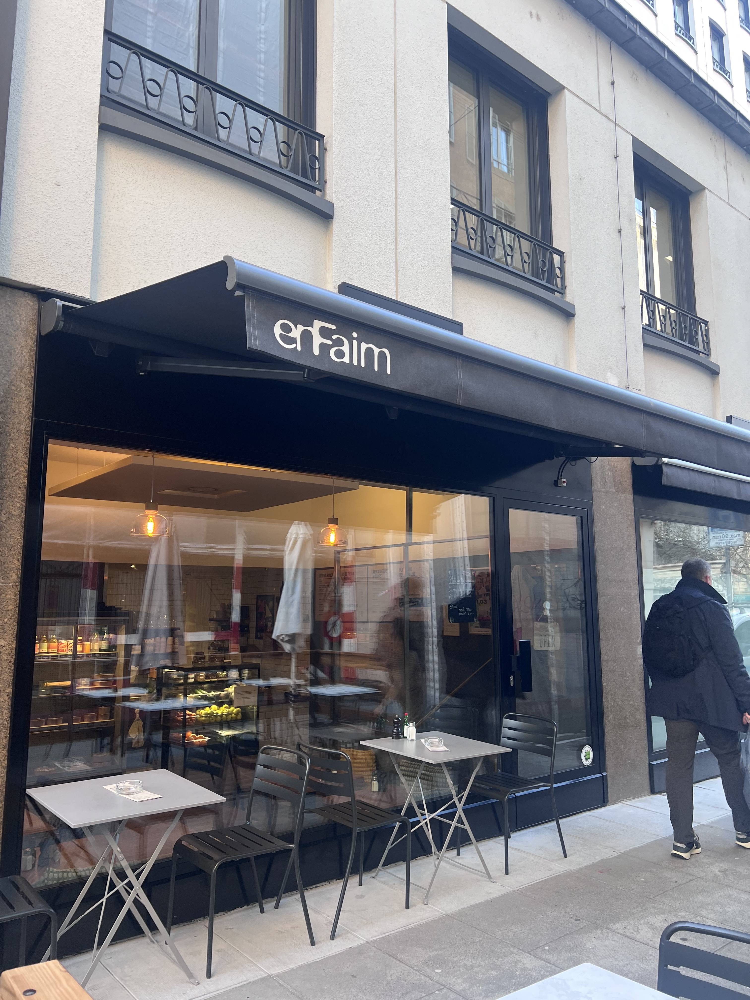
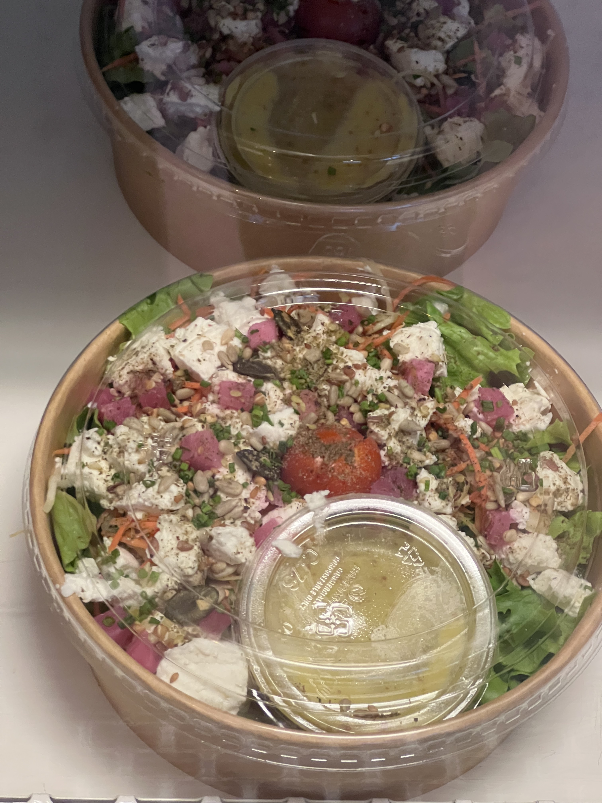
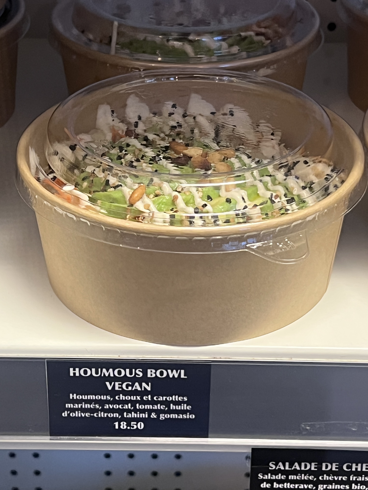
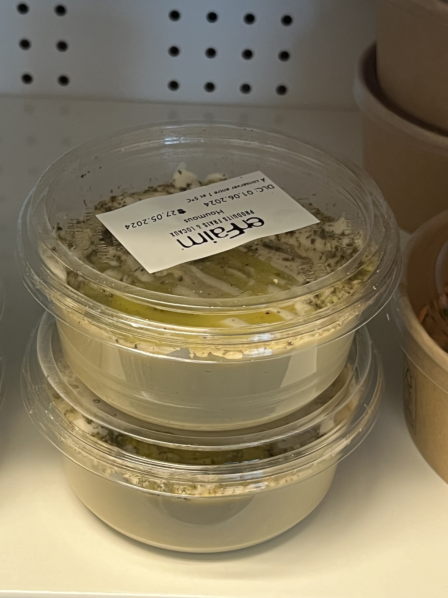
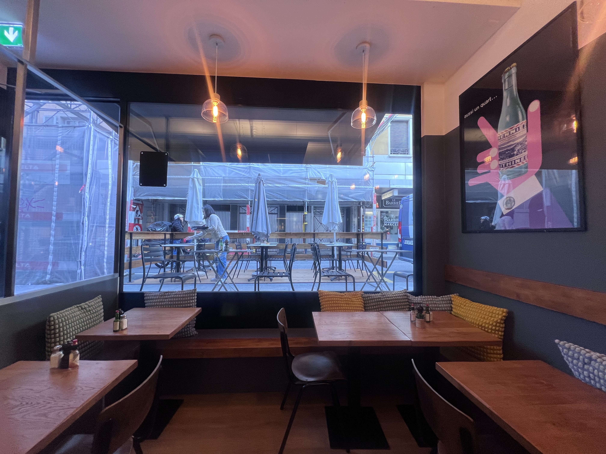
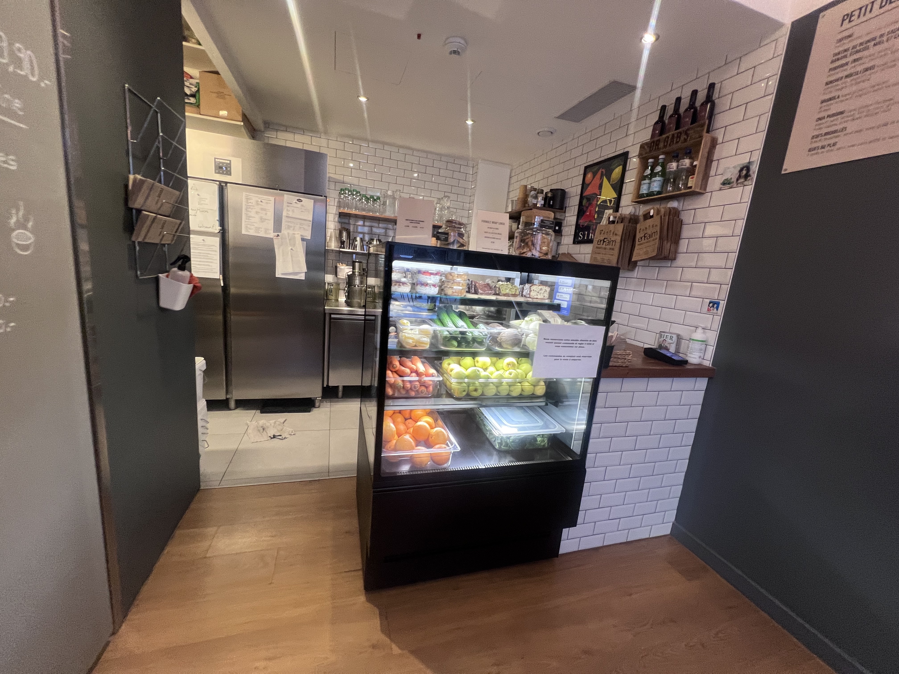

Saint-Gervais · Geneva · Switzerland
En Faim
Fresh, Mediterranean, genuinely good. One of the better lunch options in central Geneva.
Excellent Mediterranean-style lunch spot. The food is fresh, properly made, and the kind of thing that's surprisingly hard to find well-executed in this part of the city. Good hummus, solid salads, a chicken wrap that actually works.
The thing worth ordering specifically is the sabich — originally an Iraqi Jewish dish, fried aubergine and hard-boiled egg in a pita with tahini, pickles and zhug. This isn't a holy-moly world-class sabich, but it's a very good one by Geneva standards, which is already saying something.
"Not a holy moly sabich. But for Geneva — still nice."

The fridge by the door has pre-made salads and houmous bowls to grab on the way out if you're in a rush. The menu covers breakfast through lunch — bircher muesli and avocado toast in the morning, wraps and houmous bowls and a plat chaud du jour from midday. The vegan houmous bowl is genuinely good if that's your thing.




